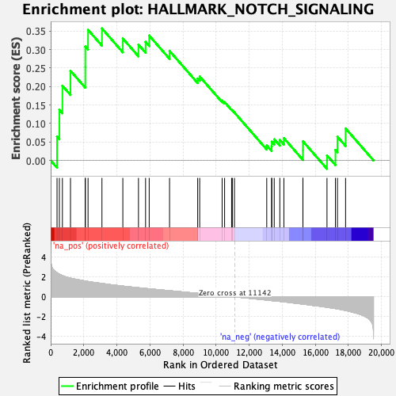

| | | Dataset | CK_basal |
| Phenotype | NoPhenotypeAvailable |
| Upregulated in class | na_pos |
| GeneSet | HALLMARK_NOTCH_SIGNALING |
| Enrichment Score (ES) | 0.35743833 |
| Normalized Enrichment Score (NES) | 1.2346547 |
| Nominal p-value | 0.18413174 |
| FDR q-value | 0.32015452 |
| FWER p-Value | 0.993 |
Table: GSEA Results Summary

Fig 1: Enrichment plot: HALLMARK_NOTCH_SIGNALING
Profile of the Running ES Score & Positions of GeneSet Members on the Rank Ordered List
| SYMBOL | RANK IN GENE LIST | RANK METRIC SCORE | RUNNING ES | CORE ENRICHMENT | | 1 | DTX2 | 384 | 2.428 | 0.0647 | Yes |
| 2 | FZD5 | 525 | 2.287 | 0.1371 | Yes |
| 3 | DTX4 | 709 | 2.145 | 0.2023 | Yes |
| 4 | TCF7L2 | 1198 | 1.885 | 0.2428 | Yes |
| 5 | CUL1 | 2092 | 1.602 | 0.2527 | Yes |
| 6 | LFNG | 2093 | 1.602 | 0.3084 | Yes |
| 7 | HES1 | 2260 | 1.545 | 0.3537 | Yes |
| 8 | PSEN2 | 3100 | 1.346 | 0.3574 | Yes |
| 9 | DLL1 | 4363 | 1.081 | 0.3303 | No |
| 10 | HEYL | 5309 | 0.916 | 0.3136 | No |
| 11 | CCND1 | 5738 | 0.844 | 0.3210 | No |
| 12 | WNT5A | 5957 | 0.813 | 0.3381 | No |
| 13 | NOTCH1 | 7189 | 0.622 | 0.2966 | No |
| 14 | FBXW11 | 8890 | 0.356 | 0.2218 | No |
| 15 | JAG1 | 9012 | 0.334 | 0.2272 | No |
| 16 | NOTCH2 | 10368 | 0.126 | 0.1621 | No |
| 17 | PRKCA | 10518 | 0.101 | 0.1579 | No |
| 18 | ARRB1 | 10941 | 0.030 | 0.1373 | No |
| 19 | PPARD | 10986 | 0.024 | 0.1359 | No |
| 20 | WNT2 | 11114 | 0.004 | 0.1296 | No |
| 21 | KAT2A | 13067 | -0.317 | 0.0405 | No |
| 22 | DTX1 | 13363 | -0.374 | 0.0383 | No |
| 23 | APH1A | 13371 | -0.374 | 0.0510 | No |
| 24 | PSENEN | 13519 | -0.397 | 0.0572 | No |
| 25 | ST3GAL6 | 13857 | -0.453 | 0.0557 | No |
| 26 | SAP30 | 14103 | -0.496 | 0.0604 | No |
| 27 | FZD7 | 15254 | -0.726 | 0.0266 | No |
| 28 | RBX1 | 15255 | -0.726 | 0.0519 | No |
| 29 | FZD1 | 16710 | -1.044 | 0.0136 | No |
| 30 | SKP1 | 17221 | -1.176 | 0.0284 | No |
| 31 | NOTCH3 | 17343 | -1.211 | 0.0643 | No |
| 32 | MAML2 | 17835 | -1.368 | 0.0866 | No |
Table: GSEA details [plain text format]
Fig 2: HALLMARK_NOTCH_SIGNALING: Random ES distribution
Gene set null distribution of ES for HALLMARK_NOTCH_SIGNALING